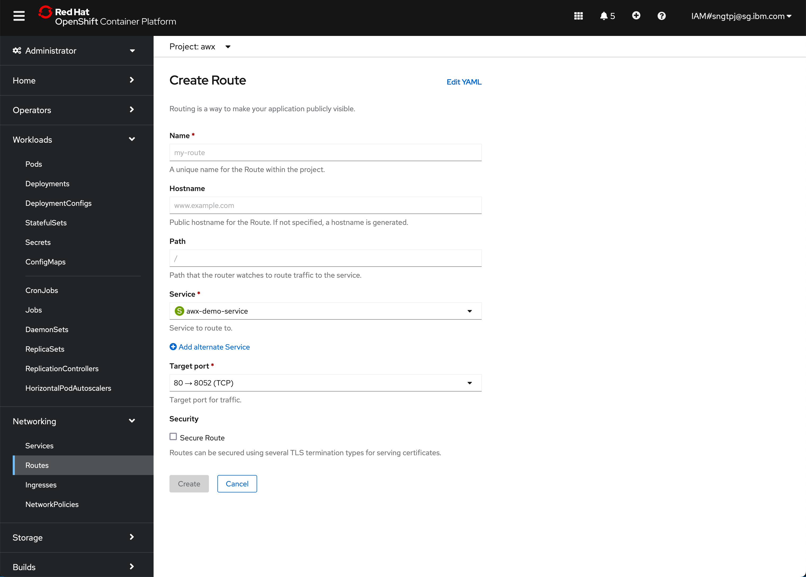
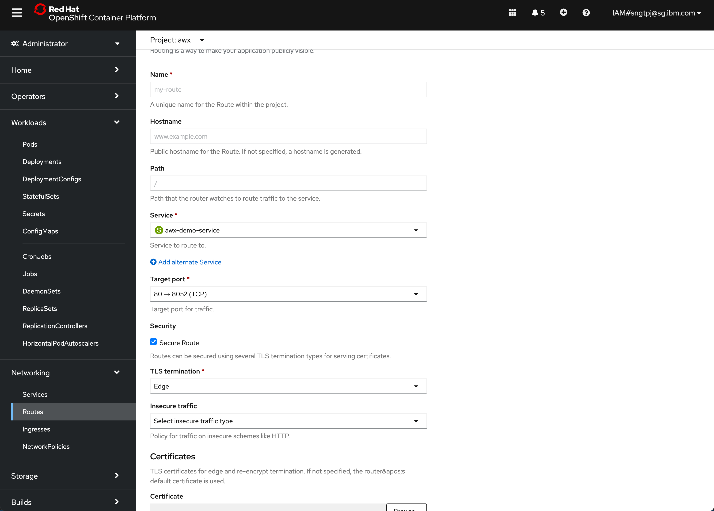

3. AWX (Community Ansible Tower)
AWX provides a web-based user interface, REST API, and task engine built on top of Ansible. It is one of the upstream projects for Red Hat Ansible Automation Platform.
3.1. Install Operator
Deploy the /yaml/awx-operator.yaml
apiVersion: kustomize.config.k8s.io/v1beta1
kind: Kustomization
resources:
# Find the latest tag here: https://github.com/ansible/awx-operator/releases
- github.com/ansible/awx-operator/config/default?ref=<tag>
# Set the image tags to match the git version from above
images:
- name: quay.io/ansible/awx-operator
newTag: <tag>
# Specify a custom namespace in which to install AWX
namespace: awx
Install the manifests by
login to OpenShift with oc login
the yaml can be found in folder yaml, you can run the kustomize command in that folder.
3.1.1. create awx project
oc new-project awx-operator
Now using project "awx-operator" on server "https://c115-e.jp-tok.containers.cloud.ibm.com:30806".
You can add applications to this project with the 'new-app' command. For example, try:
oc new-app rails-postgresql-example
to build a new example application in Ruby. Or use kubectl to deploy a simple Kubernetes application:
kubectl create deployment hello-node --image=k8s.gcr.io/serve_hostname
you can find the releases and use the image tag accordingly
cd yaml
kustomize build . | kubectl apply -f -
namespace/awx created
customresourcedefinition.apiextensions.k8s.io/awxbackups.awx.ansible.com created
customresourcedefinition.apiextensions.k8s.io/awxrestores.awx.ansible.com created
customresourcedefinition.apiextensions.k8s.io/awxs.awx.ansible.com created
serviceaccount/awx-operator-controller-manager created
role.rbac.authorization.k8s.io/awx-operator-awx-manager-role created
role.rbac.authorization.k8s.io/awx-operator-leader-election-role created
clusterrole.rbac.authorization.k8s.io/awx-operator-metrics-reader created
clusterrole.rbac.authorization.k8s.io/awx-operator-proxy-role created
rolebinding.rbac.authorization.k8s.io/awx-operator-awx-manager-rolebinding created
rolebinding.rbac.authorization.k8s.io/awx-operator-leader-election-rolebinding created
clusterrolebinding.rbac.authorization.k8s.io/awx-operator-proxy-rolebinding created
configmap/awx-operator-awx-manager-config created
service/awx-operator-controller-manager-metrics-service created
deployment.apps/awx-operator-controller-manager created
3.1.2. switch project to awx
oc project awx
Now using project "awx" on server "https://c115-e.jp-tok.containers.cloud.ibm.com:30806".
3.1.3. validate pod are running
oc get pods
NAME READY STATUS RESTARTS AGE
awx-operator-controller-manager-6c44794dd7-fbntn 2/2 Running 0 4m35s
3.2. Deploy AWX
create awx-demo.yaml and then add into the kustomization.yaml under resources and run the following oc commands.
kustomize build . | kubectl apply -f -
namespace/awx unchanged
customresourcedefinition.apiextensions.k8s.io/awxbackups.awx.ansible.com unchanged
customresourcedefinition.apiextensions.k8s.io/awxrestores.awx.ansible.com unchanged
customresourcedefinition.apiextensions.k8s.io/awxs.awx.ansible.com unchanged
serviceaccount/awx-operator-controller-manager unchanged
role.rbac.authorization.k8s.io/awx-operator-awx-manager-role configured
role.rbac.authorization.k8s.io/awx-operator-leader-election-role unchanged
clusterrole.rbac.authorization.k8s.io/awx-operator-metrics-reader unchanged
clusterrole.rbac.authorization.k8s.io/awx-operator-proxy-role unchanged
rolebinding.rbac.authorization.k8s.io/awx-operator-awx-manager-rolebinding unchanged
rolebinding.rbac.authorization.k8s.io/awx-operator-leader-election-rolebinding unchanged
clusterrolebinding.rbac.authorization.k8s.io/awx-operator-proxy-rolebinding unchanged
configmap/awx-operator-awx-manager-config unchanged
service/awx-operator-controller-manager-metrics-service unchanged
deployment.apps/awx-operator-controller-manager unchanged
awx.awx.ansible.com/awx-demo created
kubectl get pods -l "app.kubernetes.io/managed-by=awx-operator"
NAME READY STATUS RESTARTS AGE
awx-demo-postgres-0 1/1 Running 0 2m6s
3.2.1. To retrieve the admin password, run
kubectl get secret awx-demo-admin-password -o jsonpath="{.data.password}" | base64 --decode
3.2.2. creae HTTP non secure route
3.2.3. create secure route with edge
create a secure reoute with passthrough with the following yaml
kind: Route
apiVersion: route.openshift.io/v1
metadata:
name: awx3
namespace: awx
uid: bf399197-9a9f-486c-8e2a-dcc58837e7d5
resourceVersion: '3146837'
creationTimestamp: '2022-06-08T13:42:21Z'
labels:
app.kubernetes.io/component: awx
app.kubernetes.io/managed-by: awx-operator
app.kubernetes.io/name: awx-demo
app.kubernetes.io/operator-version: 0.22.0
app.kubernetes.io/part-of: awx-demo
annotations:
openshift.io/host.generated: 'true'
managedFields:
- manager: Mozilla
operation: Update
apiVersion: route.openshift.io/v1
time: '2022-06-08T13:42:21Z'
fieldsType: FieldsV1
fieldsV1:
'f:metadata':
'f:labels':
.: {}
'f:app.kubernetes.io/component': {}
'f:app.kubernetes.io/managed-by': {}
'f:app.kubernetes.io/name': {}
'f:app.kubernetes.io/operator-version': {}
'f:app.kubernetes.io/part-of': {}
'f:spec':
'f:port':
.: {}
'f:targetPort': {}
'f:tls':
.: {}
'f:termination': {}
'f:to':
'f:kind': {}
'f:name': {}
'f:weight': {}
'f:wildcardPolicy': {}
- manager: openshift-router
operation: Update
apiVersion: route.openshift.io/v1
time: '2022-06-08T13:42:21Z'
fieldsType: FieldsV1
fieldsV1:
'f:status':
'f:ingress': {}
spec:
host: >-
awx3-awx.itzroks-270004kcfq-i65iu1-6ccd7f378ae819553d37d5f2ee142bd6-0000.jp-tok.containers.appdomain.cloud
to:
kind: Service
name: awx-demo-service
weight: 100
port:
targetPort: http
tls:
termination: edge
wildcardPolicy: None
3.3. Access AWX
3.3.1. List of routes
oc get routes
NAME HOST/PORT PATH SERVICES PORT TERMINATION WILDCARD
awx1 awx1-awx.itzroks-270004kcfq-i65iu1-6ccd7f378ae819553d37d5f2ee142bd6-0000.jp-tok.containers.appdomain.cloud awx-demo-service http None
awx3 awx3-awx.itzroks-270004kcfq-i65iu1-6ccd7f378ae819553d37d5f2ee142bd6-0000.jp-tok.containers.appdomain.cloud awx-demo-service http edge None